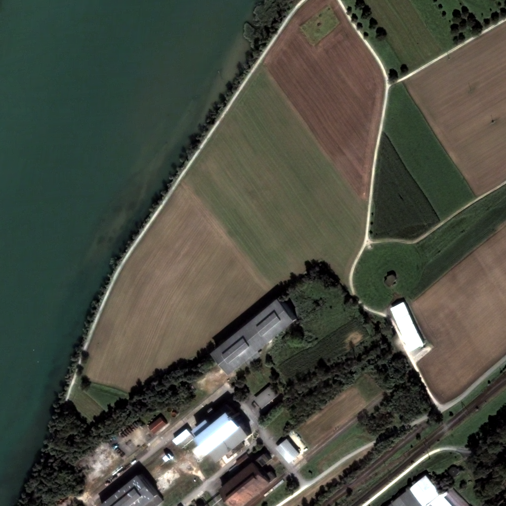

BandMathFilterExample.cxx¶
The otb::BandMathImageFilter is based on the mathematical parser library muParser. The built in functions and operators list is available at: http://muparser.sourceforge.net/mup_features.html.
In order to use this filter, at least one input image should be
set. An associated variable name can be specified or not by using
the corresponding SetNthInput method. For the nth input image, if
no associated variable name has been specified, a default variable
name is given by concatenating the letter “b” (for band) and the
corresponding input index.
The next step is to set the expression according to the variable
names. For example, in the default case with three input images the
following expression is valid: (b1+b2)*b3.
|  |
NDVI of a Quickbird image computed with BandMathImageFilter
Example usage:
./BandMathFilterExample Input/qb_RoadExtract.tif Output/RoadExtractBandMath.tif Output/qb_BandMath-pretty.jpg
Example source code (BandMathFilterExample.cxx):
#include "itkMacro.h"
#include <iostream>
#include "otbImage.h"
#include "otbVectorImage.h"
#include "otbImageFileReader.h"
#include "otbImageFileWriter.h"
#include "itkUnaryFunctorImageFilter.h"
#include "itkCastImageFilter.h"
#include "otbVectorImageToImageListFilter.h"
// We start by including the required header file.
// The aim of this example is to compute the Normalized Difference Vegetation Index (NDVI)
// from a multispectral image and then apply a threshold to this
// index to extract areas containing a dense vegetation canopy.
#include "otbBandMathImageFilter.h"
int main(int argc, char* argv[])
{
if (argc != 4)
{
std::cerr << "Usage: " << argv[0] << " inputImageFile ";
std::cerr << " outputImageFile ";
std::cerr << " outputPrettyImageFile" << std::endl;
return EXIT_FAILURE;
}
// We start by the typedefs needed for reading and
// writing the images. The BandMathImageFilter class
// works with Image as input, so we need to define additional
// filters to extract each layer of the multispectral image.
typedef double PixelType;
typedef otb::VectorImage<PixelType, 2> InputImageType;
typedef otb::Image<PixelType, 2> OutputImageType;
typedef otb::ImageList<OutputImageType> ImageListType;
typedef otb::VectorImageToImageListFilter<InputImageType, ImageListType> VectorImageToImageListType;
typedef otb::ImageFileReader<InputImageType> ReaderType;
typedef otb::ImageFileWriter<OutputImageType> WriterType;
// We can now define the type for the filter
typedef otb::BandMathImageFilter<OutputImageType> FilterType;
// We instantiate the filter, the reader, and the writer
ReaderType::Pointer reader = ReaderType::New();
WriterType::Pointer writer = WriterType::New();
FilterType::Pointer filter = FilterType::New();
writer->SetInput(filter->GetOutput());
reader->SetFileName(argv[1]);
writer->SetFileName(argv[2]);
reader->UpdateOutputInformation();
// We now need to extract each band from the input VectorImage,
// it illustrates the use of the VectorImageToImageList.
// Each extracted layer is an input to the BandMathImageFilter
VectorImageToImageListType::Pointer imageList = VectorImageToImageListType::New();
imageList->SetInput(reader->GetOutput());
imageList->UpdateOutputInformation();
const unsigned int nbBands = reader->GetOutput()->GetNumberOfComponentsPerPixel();
for (unsigned int j = 0; j < nbBands; ++j)
{
filter->SetNthInput(j, imageList->GetOutput()->GetNthElement(j));
}
// Now we can define the mathematical expression to perform on the layers (b1, b2, b3, b4).
// The filter takes advantage of the parsing capabilities of the muParser library and
// allows setting the expression as on a digital calculator.
// The expression below returns 255 if the ratio (NIR-RED)/(NIR+RED) is greater than 0.4 and 0 if not.
filter->SetExpression("if((b4-b3)/(b4+b3) > 0.4, 255, 0)");
#ifdef OTB_MUPARSER_HAS_CXX_LOGICAL_OPERATORS
filter->SetExpression("((b4-b3)/(b4+b3) > 0.4) ? 255 : 0");
#else
filter->SetExpression("if((b4-b3)/(b4+b3) > 0.4, 255, 0)");
#endif
// We can now run the pipeline
writer->Update();
// The muParser library also provides the possibility to extend existing built-in functions. For example,
// you can use the OTB expression "ndvi(b3, b4)" with the filter. In this instance, the mathematical expression would be "if(ndvi(b3, b4)>0.4, 255, 0)", which would return the same result.
typedef otb::Image<unsigned char, 2> OutputPrettyImageType;
typedef otb::ImageFileWriter<OutputPrettyImageType> PrettyImageFileWriterType;
typedef itk::CastImageFilter<OutputImageType, OutputPrettyImageType> CastImageFilterType;
PrettyImageFileWriterType::Pointer prettyWriter = PrettyImageFileWriterType::New();
CastImageFilterType::Pointer caster = CastImageFilterType::New();
caster->SetInput(filter->GetOutput());
prettyWriter->SetInput(caster->GetOutput());
prettyWriter->SetFileName(argv[3]);
prettyWriter->Update();
}